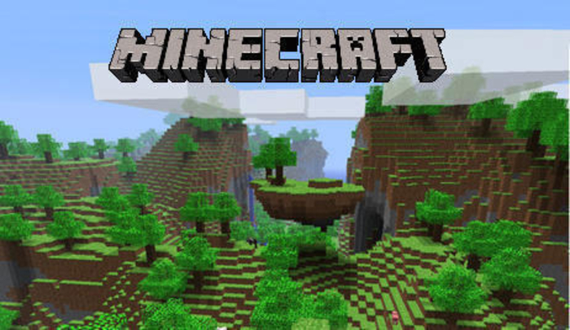
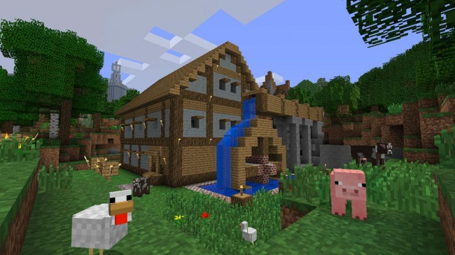

Meetings
This section includes all the 'after-action' reports of the Games Creators Club weekly meetings.
Meetings are held in the evenings at Kenilworth School during term time. The club currently has members from Year 7 to Year 11. If you are a student at Kenilworth School and you would be keen to join, let your form tutor know and they can put you in touch with the organisers.
Alternatively, you can follow along with the meetings and content using the articles posted here.
Meeting 6–Saving & Loading Files
- Details
- Published on Monday, 04 March 2013 13:03
- Written by Edward Powell
- Hits: 1048
In this session we looked at file loading and saving. In the last meeting before half-term we had the bare-bones of a game, but we were creating the background by ‘hardwiring’ the positions of our bush and tree images in code. In this meeting we want to see how we can load in the layout of our background map using a simple text file. Then we will be able to edit or add completely new levels to our game without modify any code.
Defining our map
Our starting point is do think of our map level as a grid. At each point in the grid we can have a number that will indicate a type of image to use for that location – 1 is grass, 2 is concrete, 3 is a wall, etc.
| 1 | 1 | 1 | 1 |
| 1 | 2 | 2 | 1 |
| 1 | 2 | 2 | 1 |
| 1 | 3 | 2 | 1 |
We’ll call the images ‘tiles’ because building our map will be a bit like tiling a floor – we’ll look at map for each location, pick the appropriate tile image and then render it in that location. The images we used were from the python-games directory:
These images are slightly more complicated than the most basic form of tile, because they will give the impression of a 3D world when overlaid with one another. Because of this they are not actually square. If you want to create your own map tiles, I would recommend using simple 64 pixel square images instead – but we needed to use existing images in the club.
We can load our images into a List of images like this:
tile_image_list = [
pygame.image.load('Wall_Block_Tall.png'),
pygame.image.load('Grass_Block.png'),
pygame.image.load('Plain_Block.png'),
pygame.image.load('Wood_Block_Tall.png')
]
Files with miles of tiles…
So we know that our map will be a grid, but how can we store a grid in a file? Well, we used a simple text file where each line of the file is a row in our grid. On each line we write the number of the image tile and separate each one with a ‘,’. So the file will look like this:
1,1,1,1
1,2,2,1
1,2,2,1
1,3,2,1
Four lines, and each line has four (comma separated) numbers.To read a text file like this we need to import the os module (which includes all the Operating System-related commands). Then use the Open function to create a file object. Then we can read each line from the file object. Split the line on commas to get the list of individual tile numbers:
def LoadLevelMap(filename):
file = open(filename)
for line in file:
tiles = line.split(",")
level_map.append(tiles)
file.close()
Don’t forget to close the file when you have finished with it, or you will leave it locked and inaccessible to your own and other programs.
Maps in memory
When we load this file we need to store the map in the computer’s memory so we can read it during the draw function and blit the tile with the matching index number. To do this we use a python List of rows, and each row will also be List of tiles – a List of Lists! But if you think about this for a moment it is not as complicated as it first appears and it is a common construction in programming that is often called ‘nesting’. To read back this data, we’ll also use a For Loop that is nested inside another For Loop too. The outer For Loop will go through the rows and then run the inner For Loop to read each tile number from the row.
def DrawLevelMap():
x_pos = 0
y_pos = 0
for line in level_map:
for tile in line:
screen.blit(tile_image_list[int(tile)], (x_pos, y_pos))
x_pos += 50
x_pos = 0
y_pos += 40
Because we’ve wrapped up the key bits of code into functions we can now just call them at the appropriate stages in our game set-up and game loop to do their funky stuff. Also we can easily re-use this code again in different projects because it is (quite) self-contained.
All the code for a quick demo is here, assuming you have saved your level file as “GCC-Level1.txt” inside the python-games directory along with the python file.
import pygame, os
pygame.init()
screen = pygame.display.set_mode((400, 400))
tile_image_list = [
pygame.image.load('Wall_Block_Tall.png'),
pygame.image.load('Grass_Block.png'),
pygame.image.load('Plain_Block.png'),
pygame.image.load('Wood_Block_Tall.png')
]
level_map = []
def LoadLevelMap(filename):
file = open(filename)
for line in file:
tiles = line.split(",")
level_map.append(tiles)
file.close()
def DrawLevelMap():
x_pos = 0
y_pos = 0
for line in level_map:
for tile in line:
screen.blit(tile_image_list[int(tile)], (x_pos, y_pos))
x_pos += 50
x_pos = 0
y_pos += 40
print(x_pos, y_pos)
LoadLevelMap("GCC-Level1.txt")
DrawLevelMap()
pygame.display.flip()
Meeting 5+ Minecrafting
- Details
- Published on Sunday, 24 February 2013 09:27
- Written by Edward Powell
- Hits: 1441

For the last 10 minutes of the session I found a great target for our new-found python skills in a proper commercial game – Minecraft.
The version recently released for the RPi can be found at the PiStore and it includes a python scripting interface. I moved the mcpi directory onto the desktop of the club RPi’s for easy access.
Initialising our connection to minecraft
First we need start minecraft running in X Windows on the Pi, then open a terminal window in the mcpi directory and change our current directory (using the cd command) to the one containing the python module for minecraft:
cd mcpi/api/python/acpi
then start python
python
and import the minecraft module into a namespace called ‘minecraft’.
import minecraft as minecraft
and get hold of the main minecraft object:
mc = minecraft.Minecraft.create()
Now we should have a minecraft object called ‘mc’ and we can use it to access lots of different commands in minecraft. We can find out where we are with:
mc.Player.getTilePos()
then create some blocks around us using:
mc.setBlock(x, y, z, block_id)
where the block_id is one of the many types of block. It turns out
that Scott has an encyclopaedic knowledge of these and told me that id
‘10’ is lava. This was impressive, but caused me to die from my own lava
flow almost immediately in my own demo 

You can use all the usual python constructs, like for loops, to programmatically creating lots of shapes. You can even create python module with some functions defined to create whole structures or buildings automatically. Enjoy!
Meeting 5–Putting it all together…
- Details
- Published on Sunday, 24 February 2013 08:38
- Written by Edward Powell
- Hits: 1131
This was the last session before half-term so I was keen to finish with a basically functional game! For this we needed to add two key game principles to our growing collection – showing a score, and a bit of randomness.
Rendering Text
Unlike the early sessions, printing text is decidedly trickier using pygame. It involves creating a font object, using this to render to a surface (which is an image) and then blitting this surface to our screen backbuffer and flipping it to the front. Phew! Lets eat this elephant a bite at a time…
Creating a font object
We need to initialise the font system in pygame and then create a font object from the available system fonts installed on your computer.
pygame.font.init()
font_object = pygame.font.SysFont("Arial", 30)
How did we know to use the name ‘Arial’? Well strictly speaking we need to know what fonts are installed on the computer on which we are going to run this game. There are certainly likely to very different ones installed on a typical Windows PC compared to the RPi. To find out we can use the IDLE shell to type in directly:
>>> import pygame
>>> pygame.init()
>>> for font in pygame.font.get_fonts():
print(font)
This will print the names of all the fonts installed on your machine – pick one of these and use this instead of ‘Arial’.
Rendering our text to a surface
Now we have our font object we can use it to render some text to a surface in our main game loop:
score_text_surface = font.render("Score: " + str(score), 1, (255, 255,255))
This line assumes that our score is being kept in a simple integer variable called ‘score’, s
Blit our surface to the screen
Finally we can blit our surface to the screen in exactly the same way we blitted our images in the last session:
screen.blit(score_text_surface, (10, 10))
If you recall, the pair of numbers is the screen coordinate to blit to. In this case 10 pixels across and 10 pixels down from the top left corner of our screen.
Random Girlfriends
So, our Valentine’s Day meeting game needs a backstory. Our player character, lets call him Jack (because we know Jack has a thing about Pink Girl), has arranged to meet *all* of his girlfriends at the same place by accident. If they meet each other he’s going to be totally busted. So our game will be that Jack needs to meet all his girlfriends as they walk across the park and send them on their way with a quick kiss (or mouse click). For each girlfriend he succeeds in kissing we’ll award 10 points, but for each one that he misses he’ll lose 5 points.
The main action we need to implement here is that PinkGirl needs to start at a random location on the left of the screen and she needs to move across the screen each time through the game loop. If she is clicked on, we’ll score 10 and move her back to the left. If she makes it to the right-hand of the screen then we’ll subtract 5 points and then move her back.
Data-wise we need two things here: the bounding rectangle of the girl, so we can test if the mouse has been clicked on her, and a pair of position coordinates that we can adjust programmatically to move her around. These are created thus:
girl = pygame.image.load("pinkgirl.png")
girl_rect = girl.get_rect()
girl_position = [0,0]
To be able to create random numbers we also need to import the random module at the beginning of our game code:
import pygame, random
We can now use the random object to create random integers (random.randint) between two values – in our case 0, an the height of the screen to give a random starting position for the girl.
Now to move the girl across the screen until she gets the right-hand side, then reset her to a random position on the left we use this code in the main loop:
girl_position[0] += 1
girl_rect.center = girl_position
if girl_position[0] > screen.get_width():
score -= 5
girl_position[1] = random.randint(0, screen.get_height())
girl_position[0] = 0
Finally we need to add an extra bit of code the the event handlers for the mouse click. This tests if we have clicked on the girl and it resets her position and adjusts the score accordingly:
if event.type == pygame.MOUSEBUTTONDOWN:
if girl_rect.collidepoint(event.pos):
score += 10
girl_position[1] = random.randint(0, screen.get_height())
girl_position[0] = 0
And that is basically it. There is *a lot* to take in I know – this was probably too ambitious for one session in hindsight, but never mind. For the last 10 minutes we directed our new-found python skills at minecraft to cheer up those with aching brains, but before we go onto that, here is the full code for the game, just for the record:
import pygame, random
pygame.init()
pygame.font.init()
screen = pygame.display.set_mode((400, 400))
font = pygame.font.SysFont("Arial", 30)
boy = pygame.image.load("boy.png")
boy_rect = boy.get_rect()
girl = pygame.image.load("pinkgirl.png")
girl_rect = girl.get_rect()
background = pygame.image.load("flippyboard.png")
tree_image = pygame.image.load("Tree_Ugly.png")
position = [0,0]
girl_position = [0,0]
tree_positions = [(167, 56), (78, 127), (55, 55), (350, 270)]
score = 0
game_running = True
while game_running:
for event in pygame.event.get():
if event.type == pygame.QUIT:
game_running = False
if event.type == pygame.MOUSEMOTION:
position = event.pos
if event.type == pygame.MOUSEBUTTONDOWN:
if girl_rect.collidepoint(event.pos):
score += 10
girl_position[1] = random.randint(0, screen.get_height())
girl_position[0] = 0
boy_rect.center = position
# Move the girl
girl_position[0] += 1
girl_rect.center = girl_position
if girl_position[0] > screen.get_width():
score -= 5
girl_position[1] = random.randint(0, screen.get_height())
girl_position[0] = 0
screen.blit(background, (0,0))
screen.blit(girl, girl_rect)
screen.blit(boy, boy_rect)
score_text = font.render("Score: " + str(score), 1, (255, 255,255))
screen.blit(score_text, (10, 10))
for tree in tree_positions:
screen.blit(tree_image, tree)
pygame.display.flip()
pygame.quit()
Meeting 4–Graphics!!
- Details
- Published on Thursday, 07 February 2013 20:48
- Written by Edward Powell
- Hits: 1007

This week we put together everything we’ve been working on over the last few meetings to start rendering some graphics in the game loop and then move them around using the mouse.
The graphics we used are all part of the pygame games provided as part of the raspian image. We discussed how to define ‘paths’ to different files on the computer, but to simplify the process of finding the images we need, we started the IDLE shell, created an new window then immediately saved our new file in the pygames folder – in the same location as the images.
Everyone then created the basic pygame initialisation and game loop in the new blank file (it’s all good practice!) and then we got onto the meat and potatoes – loading an image.
We used pygame.image.load to import an image from disk and then store it in a variable. Then, in the game loop, we used the blit method (short for ‘block image transfer’, if I remember my Amiga days correctly) to render the image using the variable name. We also had to remember to flip our freshly drawn screen from the back buffer to the visible screen.
Once we’d nailed the basic principles of rendering images, we added a background and some bushes, being careful to draw them over the top of each other in the correct order: background, manga boy (or girl in Jack’s case), then the bushes.
The final bit to wire-up was some interaction. Initially I demonstrated using a mouse click (the pygame.MOUSEBUTTONDOWN event) to move the character around the screen. But Jeremy, et al. tried the pygame.MOUSEMOTION event instead and this was actually way better!
So there we had it – loops, rendering and events coming together to make something that is really starting to look like a game!
Here’s the final code:
import pygame
pygame.init()
screen = pygame.display.set_mode((400, 400))
boy = pygame.image.load("boy.png")
background = pygame.image.load("flippyboard.png")
tree_image = pygame.image.load("Tree_Ugly.png")
position = (0,0)
tree_positions = [(167, 56), (78, 127), (55, 55), (350, 270)]
game_running = True
while game_running:
for event in pygame.event.get():
if event.type == pygame.QUIT:
game_running = False
if event.type == pygame.MOUSEMOTION:
position = event.pos
screen.blit(background, (0,0))
screen.blit(boy, position)
for tree in tree_positions:
screen.blit(tree_image, tree)
pygame.display.flip()
pygame.quit()
Meeting 3 – Functions, While-loops & Events
- Details
- Published on Saturday, 02 February 2013 15:33
- Written by Edward Powell
- Hits: 974
In this meeting we got into extending and organising some of our code with functions defined using the def keyword. We all created a new Me() function that printed our name and (apparently extensive!) skills.
With functions under our belts we went back to the main game loop in pygame. We learned about the while loop and set a game loop calling our own Update() and Draw() functions until the game_running flag was set false.
Then we learned how the game window needs to interact with the the operating system (either Windows or LDXE on the RPi’s) using messages and events. We added a check for OS messages on the pygame event queue and printed the different events being sent to our game.

{kind=link}
{kind=link}
{kind=link}
{kind=link}
We rigged a test for the pygame.QUIT event, which was received when our game’s frame window close button was clicked. We used this to exit our game loop cleanly. The final version of this bit of code was:
import pygame, sys
pygame.init()
screen = pygame.display.set_mode((640, 480))
game_running = True
while game_running:
for event in pygame.event.get():
if event.type == pygame.QUIT:
game_running = False
print(pygame.event.event_name(event.type))
pygame.quit()
sys.exit()
Jeremy and Oliver went on to use this code to test if the mouse was inside or outside of a circle they had drawn on the screen. We just got this working before the end of the session using Pythagoras’ Theorem to test if the mouse X and Y position was within the radius distance of the centre of the circle. These are the rudiments of collision detection – nice work lads, well done!